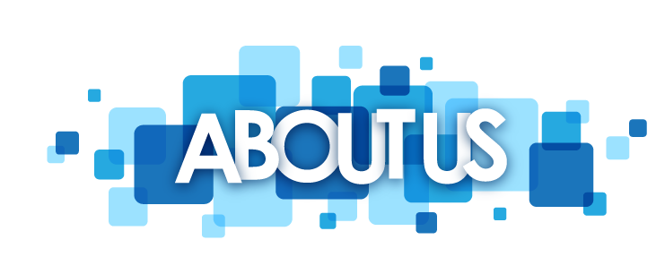

За нас:
Създаване и актуализиране на различни по своя характер
политики за информационна сигурност.
Това е динамичен процес, които зависи от информационните
и комуникационни технологии и свързаните с тяхното развитие рискове за
използвания информационен ресурс.
Политиките за информационна сигурност отразяват
както спецификата в дейността на организациите,
така и противодействието на глобалните заплахи,
възникващи в процеса на развитие на
Интернет и комуникационната свързаност на обществото.
Нашата цел:
Улесняване на процеса по изготвяне на
информационна политика за сигурност.
Начало
За нас
Създай политика
Вход
Регистрация